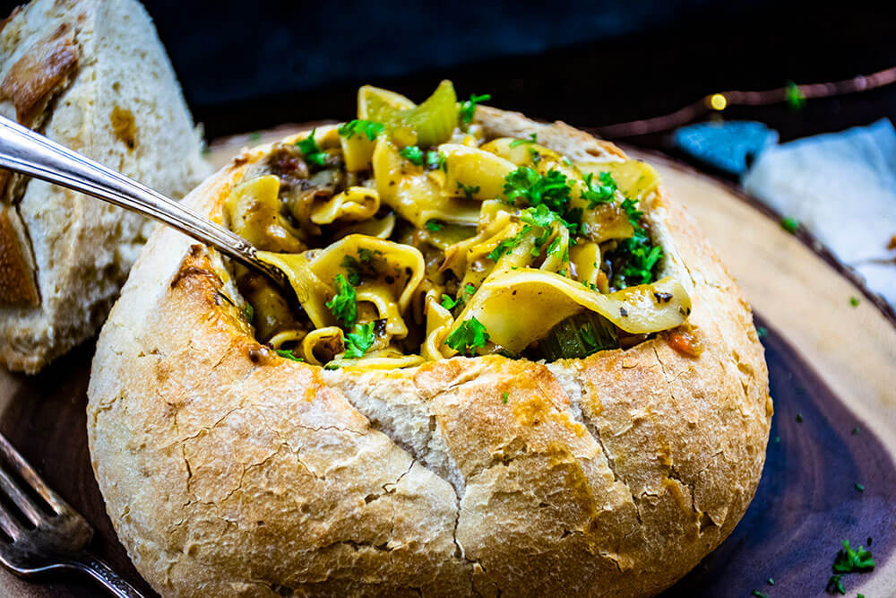

Oxtail Recipe

Tywin Lannister's Oxtail Stew
A delightful stew made from leftover liverstock that is served to the Tywin Lannister. A rich and svory stew served in a toasted sourdough bread bowl.
Ingredients
- 16 oz oxtail
- 3 tablespoons butter
- 1 white onion sliced thin
- 4 red skinned potatoes chopped
- 2 turnips chopped
- 2 ribs celery chopped
- 1/2 cup corrot chopped
- 1 tablespoon whole grain mustard
- 2 tablespoons garlic minced
- 1 tablespoon tomoto paste
- 1/2 tablespoon Worcestershire
- 1 1/2 cups red wine
- 1 leek chopped
- 5 cups water + more as needed
- 1 tablespoon tarragon
- 1 tablespoon marjoram
- 1/2 teaspoon red pepper flakes
- 2 aby leaves
- 1 package egg noodles
- 2 tablespoons brown sugar
- 1 small loaf sourdough bread as needed for bread bowls
Instructions
- In a large Dutch oven or cast iron pot over medium-high heat, melt and brown the butter until frothy. Add the oxtail to the hot butter and sear on all sides until golden brown, about 1-2 minutes per side. Season generously with salt and pepper. Remove the oxtail from the pot and set aside. Do not clean the pot.
- Add the white onions to the remaining fat in the pot. Sauté until tender and browned, about 5-10 minutes. Add the potatoes to the pot along with the turnips, carrots and celery. Stir and continue to cook until the potatoes are turning translucent – about another 5 minutes. Season with salt and pepper.
- Next, stir in the whole grain mustard, garlic, Worcestershire sauce, and tomato paste. Pour in the red wine. Stir until the tomato paste has 'melted' into the wine. Let simmer for 5-10 minutes.
- Thoroughly clean and chop the leek. Toss the chopped leek into the pot and stir until it is combined into the sauce. Return the seared oxtail to the pot. Add the tarragon, marjoram, red pepper flakes, and bay leaves. Pour in water until it covers the oxtail – about 4 cups. Cover the pot and simmer for 3-4 hours.
- Check the meat after 3 hours. It should be tender and falling off the bone. If not, continue to simmer until the meat easily pulls away from the bone.
- Preheat the oven to 375°F. Use a sharp knife to remove the top and center of the sourdough loaf to form a bread bowl. You may have to use your hands to rip out the bread in an even layer. There should be at least 1-2 inches of bread crust forming the bowl on all sides. Place the bread bowl and center piece onto a baking sheet and toast for about 15-20 minutes.
- About 15 minutes prior to serving, use forks to pull the meat from the bones and remove the bones from the pot. Add egg noodles to the pot and stir until coated in the stew. Add about another 1-2 cups of water – enough to mostly cover the noodles. Then cover and continue to simmer until the egg noodles are tender – about 15 minutes.
- Ladle the stew and noodles into the toasted bread bowl. Serve with a flagon of wine to the Hand of the King. Enjoy!
Home Page